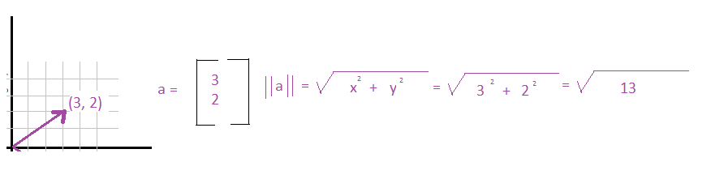
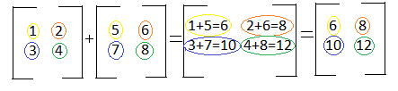
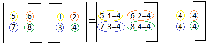
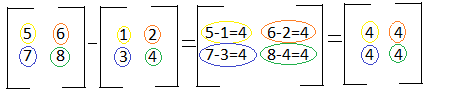
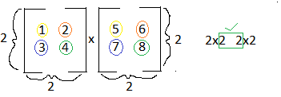
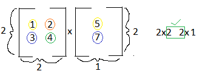
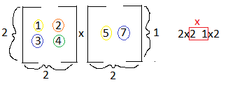
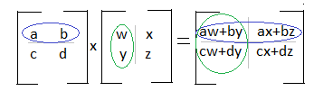
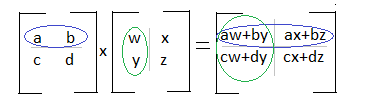
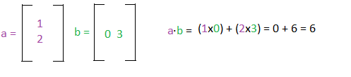

Introduction to Linear Algebra
Linear Algebra is a math based on the manipulation of linear equations through matrices and vectors. An important note to keep in mind is that linear algebra only deals with linear equations, which when plotted on a graph are straight lines. These types of equations can be represented by vectors.
If you've studied physics, you may remember vectors as a force with a direction and magnitude. Vectors have many visual representations and can be shown as a ordered pair, in matrix form, a system of equations, or as a line on a graph.
 In this guide we will learn:
In this guide we will learn:
2. Dimensions
3. Vector arithmetic
4. Matrix Multiplication
5. Inner Dot Product and Orthogonality
6. System of Linear Equations
7. Row Echelon Form
8. Reduced Echelon Form
9. Linear Combination and Span
10. Linear Independence
11. Matrix Inverse
12. Determinants
13. Bases and Orthogonal Bases
Magnitude and Unit Vectors
Vectors have magnitudes which are similar to the lengths of lines, and can be calculated similarly as well. The notation for the magnitude of a vector is: ||a||. Let's see how we can calculate it:  If we take the magnitude of a vector and its direction, we can also create another important value - the vector's unit vector. A unit vector has a length of 1 unit, and it shows the direction of the vector regardless of magnitude or length of the original vector. The formula for a unit vector is shown below. It's notation is the same letter as the vector, however it has a carrot on top:
Brief Discussion on Dimensions
You probably noticed in the introduction that the vectors had 2 numbers. This vector has 2 dimensions which can be represented by R2. The R represents real numbers, and the superscript number represents the number of dimensions. In this text we will use R to represent real numbers, but it is usually represented by: .The superscript number can be any positive number, and we can represent it generally as Rn. For the majority of this index we will deal with real numbers, and then later switch to complex numbers. If we are working with vectors with complex numbers the Rn changes to Cn.
Basic Vector Maths
Addition
If you're trying to add two vectors together, you add the corresponding components. The two vectors below can also be represented as: (1x+3y) and (5x+7y). The x components correspond with each other, and the y components correspond with each other. Notice in the example below that the size of the final matrix is the same size as the two matrices being added. In order to add matrices, the matrices have to have the same number of rows and columns: When the matrix becomes larger, it can initially look more difficult, but the same rules above apply. Take into consideration the numbers position in the matrix. For example "1" in the first matrix is in the first row and the first column. "5" in the second matrix is in the first row and the first column. Because these two numbers are share positions in the matrix, we add them:
When the matrix becomes larger, it can initially look more difficult, but the same rules above apply. Take into consideration the numbers position in the matrix. For example "1" in the first matrix is in the first row and the first column. "5" in the second matrix is in the first row and the first column. Because these two numbers are share positions in the matrix, we add them: 
Subtraction
Matrix subtraction is very similar to matrix addition. The only change is that instead of adding the corresponding numbers, you subtract them. The two vectors below can be represented as: (1x+3y) and (5x-5y). To subtract the two vectors, you would subtract the x components and subtract the y components. Notice in the example below that the size of the final matrix is the same size as the two matrices being subtracted. In order to subtract matrices, the matrices have to have the same number of rows and columns: Similar to larger matrix addition, large matrix subtraction just requires subtracting the corresponding components from each other. For example "5" in the first matrix is in the first row and the first column. "1" in the second matrix is in the first row and the first column. Because these two numbers are share positions in the matrix, we subtract them:

Similar to larger matrix addition, large matrix subtraction just requires subtracting the corresponding components from each other. For example "5" in the first matrix is in the first row and the first column. "1" in the second matrix is in the first row and the first column. Because these two numbers are share positions in the matrix, we subtract them:

Scalar Multiplication
As discussed in the beginning, a scalar has no direction and cannot be represented in a matrix. You can however multiply a vector or a matrix by a scalar. Simply multiply each number in the matrix by the scalar. The resulting matrix will have the same number of rows and columns as the original matrix:
Vector Multiplication
Multiplying two vectors is a bit more complicated than addition, subtraction, or scalar multiplication, but with some practice you'll get the hang of it. There are a few simple rules you have to know in order to properly multiply matrices: 1. You can only multiply matrices if matrix A has the same number of columns as the number of rows in matrix B. So if matrix A is a 2x3 matrix, and matrix B is a 3x4 matrix, you can complete the equation AxB.
2. The result of the matrix changes if you change from AxB to BxA, and you may not be able to multiply BxA if it does not fulfill rule 1.
3. To multiply two matrices, follow the row column multiplication. For example, let's say you have the equation AxB=C, you take the numbers in the first row of matrix A and multiply them against the numbers in the first column of matrix B and add the products. Your result will be the number in the first row and first column in matrix C.
4. If you can multiply AxB, the resulting matrix will have the same number of rows as matrix A, and the same number of columns in matrix B.
Rule Number 1 & 2: As you can see in the examples below, you can only multiply matrices if they number of columns in matrix A equals the number or rows in matrix B:    Rule Number 3 & 4: If you look at the two examples below, you'll see that the matrix below is divided by rows, and the second matrix is divided by columns. This is a visual to aid you with row column multiplication. We can see that we multiply the first row of matrix A by the first column of matrix B. The first variable in row one is multiplied by the first variable in column one. The second variable in row one is multiplied by the second variable in column one. This trend continues and then you sum the products:
 If you analyze the diagram below, you can see that the values of the first row in matrix A, will be found in the first row of matrix C. You will also see that the values in the first column of matrix B will be found in the first column in matrix C.

If you analyze the diagram below, you can see that the values of the first row in matrix A, will be found in the first row of matrix C. You will also see that the values in the first column of matrix B will be found in the first column in matrix C.

Inner Dot Product
The inner dot product is an important concept that can provide a way to tell you a lot of information about two vectors, including the angle between the two vectors. It can also show you the effect the two vectors will have on each other- will they cancel out to 0, will there be positive growth, or will there be a reversal.Getting the dot product is similar to matrix multiplication that we learned earlier, but it deals with 2x1 and 1x2 vectors:  There's a special name for two vectors that when multiplied have an inner product of 0. Those vectors perpendicular to each other and are known as orthogonal vectors. You can have a set of orthogonal vectors, if each vector is mutually perpendicular to each other. For example: We can convert mutually orthogonal vectors into a set of Orthonormal vectors, meaning that not only are the vectors mutually orthogonal, each vector also has a unit length of 1. Bringing Equations Together: System of Linear Equations In previous sections we have looked at vectors as being separate from each other- we added them, subtracted, multiplied, etc. However systems of linear equations are quite common, and you might remember them from algebra. You may have used a method like substitution to solve this system of equations, however in linear algebra, we can find out if there is a solution and what it is by using matrices. The matrix representation of this system looks like: You can infer from the colors that each line in the matrix represents one of the equations. We can use this matrix form to create an augmented matrix, which we will use to solve the system! An augmented matrix holds both the coefficients, and what each equation equals. Each row represents the coefficients of an equation. Each column represents the coefficients for each variable. Now that we have the equations in an augmented matrix, the next question you may be asking is - how do we find the solution? To do this we will have to transform the matrix into its Row Echelon Form. Row Echelon Form When working with a system of equations, it's easier to find the solution if you're working with reduced equations. For example instead of using 4x + 16y = 0, you can use x + 4y = 0. Augmented matrices work the same, and have a form called Row Echelon Form. Here are examples of a matrix in row echelon form. Here are the characteristics of the row echelon form: The first nonzero coeffecient in each row, called the leading coefficient, is a 1. Each leading coefficient is to the right of the leading coefficient above it. Rows that are all zeros are below rows that contain nonzeroes. Why is this form helpful? Remember from earlier, that each column represents the coefficients for a variable, like x or y or z. If we cancel out the values of variables in each column, it will make it easier to find the solution to the matrix. Now that we know both the row echelon form rules and why it is useful, we can learn how to transform an augmented matrix into the row echelon form. Row operations are relatively simple to grasp, and allow you to manipulate and simplify the system of equations. You can do the following: Swap rows Multiply or divide a row by a scalar Subtract or add rows Here is an example. The rows are represented in both color, and by R1, R2, R3, R4: Notice how each operation is illustrated with an arrow, and a bit of text saying what operations are being done. This step can sometimes be skipped and replaced with a ~. The new system of equations is: As you can tell, it would be quite easier to find the solution to this system. But we can actually make this even more simpler. We can use the Reduced Echelon Form. Reduced Echelon Form The Reduced Echelon Form has the following properties: The first nonzero coefficient in each row, called the leading coefficient, is a 1. Each leading coefficient is to the right of the leading coefficient above it. Rows that are all zeros are below rows that contain nonzeroes. AND the added property: 4. Leading coefficients are the only nonzero number in their column. The augmented matrix we ended up with in the above example was in row echelon form, however if we do the row operation R1 - 2R2, and R1 - 3R2, we can get the matrix into Reduced Echelon Form. You can already see the perks of reduced echelon form! It saves the need for additional algebraic work.The transformed system of equations is: When we get a matrix into row echelon or reduced echelon form, we can actually see how many solutions the matrix is going to have. Matrices can have: 0, 1, or infinite solutions. A matrix with 0 solutions is: an inconsistent matrix. This matrix can have all 0s in a row, and then have a nonzero in the augmented part of the matrix in the same row. A matrix with 1 solution is: a matrix that has a leading coefficient in each column. A matrix with infinite solutions is: a matrix with a free variable. You can tell if you have a free variable if you have a column that does not have a leading coefficient, or a pivot, in it. Linear Combination and Span Linear combination and span may seem like foreign words to you right now, but they have simple and easy to understand meanings, and you've already had experience with one of them! A linear combination of vectors is just a summation of the vectors together. You can multiply each vector by a scalar before adding, or even subtract the vectors, and you'll get a linear combination. For example: Depending on the vectors, you may notice that there's a large number of possible linear combinations for the vectors. If you were to find all the linear combinations, you'd get a span. An example notation for span is: Where v1, v2, and v3, are vectors. For example: Where the c's are any scalar value. It can be incredibly helpful to learn if a vector falls in the span of a set of vectors, and there's a simple way to learn this information: creating a system of linear equations, then a matrix, then getting the reduced echelon form. Let's say we have the vector u = (4 , 38) and we want to know if it is a linear combination of the two vectors above. Here's how we would solve it: Linear Dependence Our next topic is linear dependence, and how to use matrices to learn if a group of vectors are linearly independent. A group of vectors are linearly independent from each other if the only solution to the vectors is a vector of all 0s. If there exists a solution of not all zeroes, the vectors are linearly dependent. Let's say that we have three vectors s, t, and u. We can combine them into one augmented matrix. We can then learn if these vectors are linearly independent or dependent by putting the matrix into row echelon form. As we can see, there is a leading coefficient in each column, so there are no free variables. This matrix only has one solution - a vector of all zeroes, and so the set of vectors are linearly independent. If there was a free variable, the set of vectors would be linearly dependent. Matrix Inverse Just like many values have an inverse, for example the inverse of 5 is ⅕, matrices also have inverses. When you multiply a matrix by its inverse, you get an identity matrix. An identity matrix is a matrix with 1's on the main diagonal, and every other number is a zero. For example the following are identity matrices. The notation for the inverse of Matrix A is A-1. A matrix that is not invertible is known as a singular matrix. There are a few methods for discerning whether or not a matrix is invertible: The matrix is a square matrix. It is nxn. The determinant is nonzero. There is a pivot position in each column, meaning the columns of the matrix are linearly independent. Matrix A is row equivalent and column equivalent to its identity matrix. This means that Matrix A can be transformed into its identity matrix with simple row operations. Now that we know the rules for quickly guessing if a matrix has an inverse, we can look at the methods for finding the inverse of the matrix. The basic premise is setting up the matrix [ A I ], I being the identity matrix, and performing row operations until we get the side where A is to be equivalent to the identity matrix. The new values on the right side of the matrix, where I used to be will be the values of A-1. Let's try this out with an example. We can merge these matrices together and form the matrix [ A I ] and then use row operations to find the inverse. Our A-1 is: Determinants Now you may have encountered a new phrase, determinant, in the rule set for determining if a nxn matrix has an inverse. A determinant is computed from the values of a square matrix and is represented as: det(A). When calculating the determinant of a matrix, you also want to change the [ ] brackets to straight lines like | | The notation is shown below. We'll start with finding the determinant for a 2x2 matrix. The formula for the determinant for a 2x2 matrix is: For example: The formula for finding the determinant for a 3x3 matrix is: The basic concept of it is take a row or column, take each element, and multiply it against the determinant of a matrix made from the elements that are in different rows and columns. So we take a and multiply it by the determinant of the matrix e,f,h,i because those values are not in a's row or column. Now you may have noticed that b has a minus sign in front of it. This is because or b's placement in the original matrix. Here's a visual of which elements will have a negative or positive sign. As you can see it follows a + - + - pattern in each row and column. The formulas for larger matrices are similar to the formula for a 3x3 matrix, but there's more break down, and it can take a long time. It is faster to learn how to plug matrices into a graphing calculator. Subspaces Before we get into subspaces, let's go over some quick notations. Let's look at: There are two parts to this notation, and they are divided by the straight line in the middle. The first part shows you the possible values of the vectors, such as the first value being x+1 and the second value being x-3. The “c” with a line through it stands for “is a set of”, and tells us that all the possible vectors will be two dimensional and have real numbers. To the right of the line is a constraint. Here the constraint is very broad, x just has to be a real number. We can take the possible values of x, and its constraint, and learn whether or not this set of vectors is a subspace. Let's say we have the set of vectors that lie in Rn, and we take a subset of those vectors, and call it V. For V to be a subspace, it needs to have the following qualities: Contains the 0 vector Closure under scalar multiplication: If you take any vector in V and multiply it by a scalar, that vector will also be in the subspace V. Closure under vector addition: You can add any two vectors in V, and the new vector will also be in V. Let's take a look at the figure above and see if it fits the rules of a subspace Lets try rule 1: containing the 0 vector. We can immediately say that this set of vectors is not a subspace because there exists no number that x+1 = 0 and x-3 = 0. Let's try another example: Here we know that the vectors will be 2 dimensional and only contain real numbers. We also have the constraint that x1 has to be greater than or equal to 0. The value x2 has no constraints on it and can be negative or positive. Let's try rule 1, the inclusion of the zero vector: It passes because according to the constraints, both values can be equal to 0. Let's try rule 3, closed under vector addition: The constraint tells us that all values of x1 will be greater than 0, and a positive number plus a positive number is a positive. So we know that this set of vectors is closed under addition. Let's try rule 2, closed under scalar multiplication: Scalars can be positive, negative, or 0. If you multiply a positive number (which x1 has to be) by a negative, the product is a negative. If x1 has a negative value, the vector no longer fits the constraint. So we now know that this set of vectors are not a subspace. Basis for a Vector Space A basis B of a vector space V is a set of vectors that meet two criteria: Spans V B is linearly independent A standard basis, or a natural basis, are composed of vectors like: e1 = (1, 0, 0, ..., 0) e2 = (0, 1, 0, …, 0) en = (0, 0, …, 1) Where n is the dimension you are working in, such as R2 or R6. There are are few steps to create a basis from a set of vectors Take the set of vectors and create an augmented matrix Use row operations to transform the matrix to reduced echelon form Pick out the columns with leading 1's, and match these columns up with the vectors in the original matrix. Your basis will be a set that contains only those vectors Let's try it out with an example with the following vector set: Notice how the basis is composed of 3 vectors, and each vector has 3 elements in it, and is in R3. Every basis will have n vectors where Rn. Orthonormal Basis An orthonormal basis is a set of vectors who are all perpendicular to each other, and who all have a magnitude of 1. They are all unit vectors. An orthonormal basis is useful because it shows the relationship between the vectors regardless of magnitude.